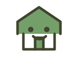
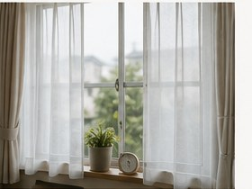
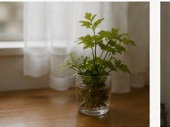

暮らしを急がせない
入居後すぐに変化を求めるのではなく、場所や人に慣れていく時間を大切にします。
Company
運営する人、支援の考え方、日々の記録や連携の姿勢をまとめています。場所としての安心感が伝わるよう、必要な情報を整理しています。

About us
ニコニコはうすは、障害のある方が日常の延長として暮らせるグループホームです。
特別なことをたくさん用意するのではなく、食事をして、休んで、必要な時に相談できる。そうした毎日の積み重ねを大切にしています。
一人で過ごしたい時間、誰かと話したい時間、少し手伝ってほしい場面。それぞれの暮らし方や距離感を尊重しながら、安心して生活できる環境づくりを心がけています。

Daily stance
大きな理念だけではなく、日々の声かけ、見守り、記録、連携の積み重ねを大切にしています。
その場の感覚だけに頼らず、ご本人の状況や支援の理由を関係者と共有できるようにします。
日々の様子を確認し、体調や気持ちの変化を見落とさないようにします。

ご家族や関係機関と連携しながらも、まずご本人の気持ちや生活のしやすさを大切にします。
地域から切り離された施設ではなく、地域で暮らすための生活の場として運営します。
Local life
近くの道を歩く、通所へ向かう、帰ってきて食事をする。ニコニコはうすが大切にしたいのは、そうした日常が無理なく続くことです。
ご本人にとっても、ご家族にとっても、暮らしの変化には不安があります。だからこそ、入居前の相談や見学では、建物だけではなく、過ごし方や支援の距離感まで確認していただけるようにしています。
法人としての基本情報だけでなく、日々の見守りや関係機関との連携まで分かるように整理しています。
Quiet materials
大きな設備紹介ではなく、毎日使う場所の清潔感や落ち着きも大切にしています。


Profile
運営に関する基本情報です。見学やご相談の際にも、必要な内容を分かりやすくご案内します。
Atmosphere
見学前に気になりやすい共有スペースや廊下まわりの雰囲気を、写真でもご紹介しています。



ACCESS
JJR武蔵野線「新座駅」周辺。
埼玉県新座市の落ち着いた住宅街を生活圏とするグループホームです。
※地図は施設所在地ではなく、新座駅周辺のエリアイメージとして掲載しています。